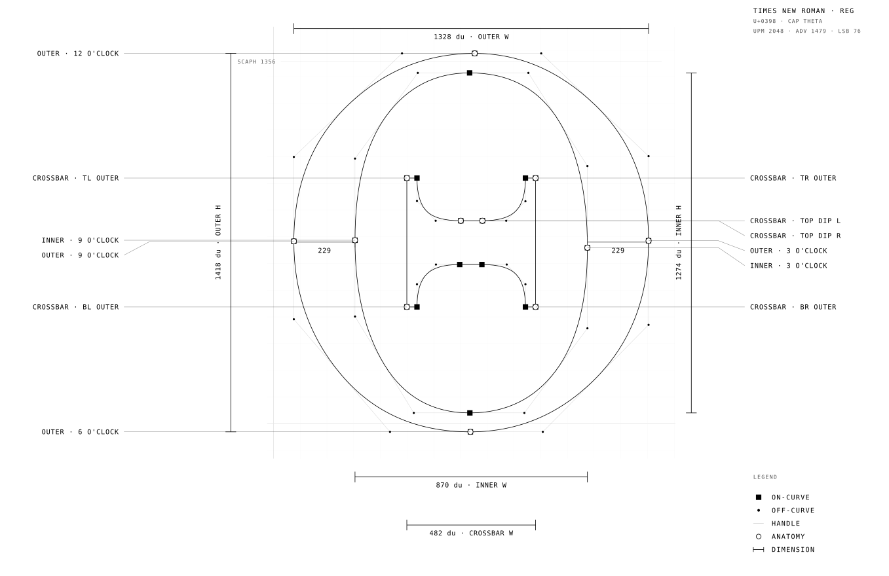

Codex 011praefatio — the submarine canonfol. 1 · recto
exit 0 — the only ending a system should want.
/var/log/epoq · last line
EPOQ IIII · SOVEREIGN PRESENTATION ENGINE
One page. One stylesheet.
IN WHICH the page reads itself entire; every measure is proved rather than asserted; and the substrate admits zero second weight.
the submarine canon — compiled through the press, 200m waterproof grade
PRESENTER: JACOB HÄGG // INTELLIGENCE MATTERSD-030 RHETORICAL CANON
Plate Ithe coordinate mark — measured from Scheherazade New outlinesfol. 2 · verso

009_WRITING // THE PROPOSITION
Every figure is measured — none is asserted.
Theorem 011.1 (the hairline limit). All boundaries evaluate strictly to 90-degree steel intersections. The system admits no second weight by construction. What remains is the hairline.
Contour 870 × 1274 design units · stroke contrast 3.18 to 1 · on-curve and off-curve datums measured at UPM 2048.
Axiomsthe structural standard — zero pill radius · single weight · nineteen gatesfol. 3 · recto
01_CURVATURE
Zero Pill Radius
Soft rounded buttons simulate consumer plastics. The sovereign workstation enforces 90-degree steel boundaries. Border radius evaluates strictly to zero.
--radius-print: 0px
02_WEIGHT
Single Weight 400
Typography relies on composition, rhythm, and size ladder. Bold 700 belongs solely to the explainer lens. The reading surface is pure weight 400.
font-synthesis: none
03_VERIFICATION
Nineteen Gates
Every commit passes headless chromium AST checks and token verification. If an element renders an unapproved pixel, deploy terminates with refusal.
canon-lint: 0 errors
Audit 004the refusal register — what the system forbids vs what it enforcesfol. 4 · verso